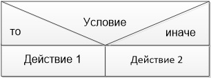
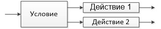
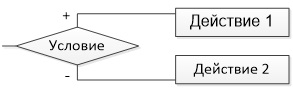

Алгоритмом называется точная инструкция исполнителю в понятной для него форме, определяющая процесс достижения поставленной цели на основе имеющихся исходных данных за конечное число шагов.
В начале ХХ века алгоритмы стали объектом изучения математиков, появились различные математические уточнения понятия "алгоритм" и возникла целая отрасль математики – теория алгоритмов. Результаты, полученные теорией алгоритмов, служат теоретическим фундаментом всей компьютерной технологии, но в повседневной программистской практике не используются.
Алгоритм - это определенным образом организованная последовательность действий, за конечное число шагов приводящая к решению задачи.
Свойства алгоритмов :
- Дискретность
- Разделение выполнения решения задачи на отдельные операции.
- Определенность
- Каждая команда алгоритма должна однозначно определять действия исполнителя.
- Результативность
- Завершение работы алгоритма за конечное число шагов.
- Массовость
- Алгоритм решения задачи разрабатывается в общем виде, то есть возможность решения класса задач, различающихся лишь исходными данными.
- Понятность
- Одержание допустимого набора команд, понятного конкретному исполнителю.
Виды алгоритмов
Алгоритмы в зависимости от цели, начальных условий задачи, путей ее решения, определения действий исполнителя подразделяются следующим образом:
Механические алгоритмы, или иначе детерминированные, жесткие (например, алгоритм работы машины, двигателя и т.п.);
Гибкие алгоритмы, механический алгоритм задает определенные действия, обозначая их в единственной и достоверной последовательности, обеспечивая тем самым однозначный требуемый или искомый результат, если выполняются те условия процесса, задачи, для которых разработан алгоритм.
Вероятностныйалгоритм дает программу решения задачи несколькими путями или способами, приводящими к вероятному достижению результата.
Эвристическийалгоритм (от греческого слова “эврика”) – это такой алгоритм, в котором достижение конечного результата программы действий однозначно не предопределено, так же как не обозначена вся последовательность действий, не выявлены все действия исполнителя. К эвристическим алгоритмам относят, например, инструкции и предписания.
Линейный алгоритм– набор команд (указаний), выполняемых последовательно во времени друг за другом.
Разветвляющийся алгоритм– алгоритм, содержащий хотя бы одно условие, в результате проверки которого ЭВМ обеспечивает переход на один из двух возможных шагов.
Циклический алгоритм– алгоритм, предусматривающий многократное повторение одного и того же действия (одних и тех же операций) над новыми исходными данными. К циклическим алгоритмам сводится большинство методов вычислений, перебора вариантов.
Цикл программы– последовательность команд (серия, тело цикла), которая может выполняться многократно (для новых исходных данных) до удовлетворения некоторого условия.
Вспомогательный алгоритм– алгоритм, ранее разработанный и целиком используемый при алгоритмизации конкретной задачи. В некоторых случаях при наличии одинаковых последовательностей указаний (команд) для различных данных с целью сокращения записи также выделяют вспомогательный алгоритм.
На всех этапах подготовки к алгоритмизации задачи широко используется структурное представление алгоритма.
Структурная схема алгоритма– графическое изображение алгоритма в виде схемы связанных между собой с помощью стрелок (линий перехода) блоков – графических символов, каждый из которых соответствует одному шагу алгоритма. Внутри блока дается описание соответствующего действия.
Графическое изображение алгоритма широко используется перед программированием задачи вследствие его наглядности, т.к. зрительное восприятие обычно облегчает процесс написания программы, ее корректировки при возможных ошибках, осмысливание процесса обработки информации.
Порядок выполнения алгоритма:
- 1.
- Действия в алгоритме выполняются в порядке их записи;
- 2.
- Нельзя менять местами никакие два действия алгоритма;
- 3.
- Нельзя не закончив одного действия переходить к следующему.
Для записи алгоритмов используются специальные языки:
- 1.
- Естественный язык (словесная запись);
- 2.
- Формулы;
- 3.
- Структурограммы;
- 4.
- Синтаксические диаграммы;
- 5.
- Графический (язык блок-схем).
Естественный язык: если условие то действие 1 иначе действие 2
Структурограмма:
Синтаксическая диаграмма:
Графический язык:
Составление алгоритмов графическим способом подчиняется двум ГОСТам:
1. ГОСТ 19.002-80, соответствует международному стандарту ИСО 2636-73. Регламентирует правила составления блок-схем.
2. ГОСТ 19.003-80, соответствует международному стандарту ИСО 1028-73. Регламентирует использование графических примитивов.
Инструкция